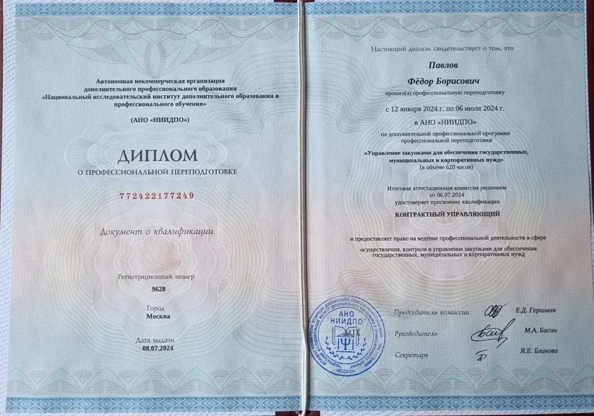

Реестр недобросовестных поставщиков
Заказчик расторг контракт. У вас есть время, но немного.
Включение в РНП закрывает доступ к государственным закупкам на два года. Само по себе расторжение контракта таким последствием не грозит — антимонопольный орган обязан установить недобросовестность, а не только факт неисполнения. Именно это и разбирается на заседании комиссии.
Как разворачивается процедура
Решение размещено в ЕИС
Заказчик обязан разместить решение об одностороннем отказе в течение трёх рабочих дней с даты его принятия. С момента надлежащего уведомления начинается отсчёт.
Окно на устранение нарушения
Если нарушение устранено в этот срок, заказчик обязан отменить своё решение — ч. 14 ст. 95. Это самый дешёвый способ закрыть вопрос, и он существует ровно до истечения срока.
Обращение уходит в УФАС
После вступления решения в силу заказчик обязан направить сведения в антимонопольный орган — ч. 16 ст. 95. Просить его этого не делать бессмысленно: обязанность императивная.
Заседание комиссии
Комиссия проверяет обстоятельства, а не только факт расторжения. К этому дню должны быть готовы письменные пояснения и доказательства.
Направления работы
С чем обращаются
Защита от включения в РНП
Подготовка письменных пояснений в территориальное УФАС, сбор доказательственной базы, представление интересов на заседании комиссии.
ПодробнееОспаривание одностороннего отказа
Признание решения заказчика о расторжении контракта недействительным в арбитражном суде. Часто ведётся параллельно с делом в УФАС.
ПодробнееАрбитраж по контрактам
Взыскание оплаты за фактически выполненное, оспаривание неустоек и штрафов, возражения на требования заказчика.
ПодробнееНаправление 01
Защита от включения в РНП
Заказчик направил сведения в антимонопольный орган, назначено заседание комиссии.
Что проверяет комиссия УФАС
Распространённое заблуждение: если контракт расторгнут, включение в реестр неизбежно. Это не так. Антимонопольный орган проверяет не только формальный факт расторжения, но и обстоятельства, которые ему предшествовали, — и вправе отказать заказчику, если недобросовестность поставщика не подтверждена.
Стандарт здесь выше простого неисполнения. Включение в реестр — мера публично-правовой ответственности, влекущая отстранение от рынка государственных закупок на два года. Она применяется при установлении умышленного уклонения от исполнения либо намеренного пренебрежения обязательствами, а не при любой просрочке.
Что делается по делу
- Восстанавливается хронология. По контракту, переписке и данным ЕИС выстраивается точная последовательность дат: когда наступил срок, когда заказчик направил претензию, какой срок в ней установил, когда принял решение и когда разместил его. На этом этапе чаще всего и обнаруживается процедурный дефект.
- Проверяется соблюдение процедуры расторжения. Сроки размещения в ЕИС, надлежащее уведомление, соответствие основания расторжения тому пункту контракта, на который заказчик сослался.
- Оценивается встречное исполнение. Передал ли заказчик площадку, материалы, транспорт, согласовал ли заявку или заказ-наряд. Если нет — срок для поставщика не начал течь.
- Собираются доказательства добросовестности. Уведомления заказчика о затруднениях, предложения замены, закупка материалов, привлечение субподрядчиков, подтверждения внешних обстоятельств.
- Готовятся письменные пояснения — структурированный документ с фактической частью, нумерованными правовыми доводами, ходатайствами и описью приложений.
- Обеспечивается участие в заседании — дистанционно либо очно, в зависимости от управления и характера дела.
Сроки
Заседание назначается быстро — счёт идёт на дни, а не на недели. Чем раньше начата работа, тем полнее доказательственная база: часть документов невозможно получить за сутки. Если обращение поступило за день до заседания, работать всё равно можно, но набор доступных доводов сужается.
Направление 02
Оспаривание одностороннего отказа
Если процедура нарушена или нарушение устранено в срок, решение можно отменить — и основание для реестра отпадает вместе с ним.
Когда решение заказчика можно оспорить
Односторонний отказ от исполнения контракта — не свободное усмотрение заказчика, а процедура, жёстко описанная законом. Отступление от неё влечёт недействительность решения. Наиболее частые дефекты:
- решение принято до истечения срока, который заказчик сам установил в претензии;
- нарушен порядок размещения решения в ЕИС и уведомления поставщика;
- основание расторжения не соответствует пункту контракта, на который заказчик сослался;
- заказчик не исполнил собственные встречные обязанности, без которых исполнение было невозможно;
- после расторжения заказчик продолжал вести себя так, будто контракт действует.
Окно на устранение нарушения
Отдельно стоит выделить механизм ч. 14 ст. 95 44-ФЗ: если поставщик устранил нарушение в течение десяти дней с даты надлежащего уведомления, заказчик обязан отменить своё решение. Это не право, а обязанность, и она не зависит от его желания. Механизм работает только внутри срока — поэтому первое, что выясняется по обращению, это дата размещения решения в ЕИС.
Чего требовать нельзя
Распространённая ошибка — требовать от заказчика не направлять сведения в антимонопольный орган. Такое требование юридически несостоятельно: направление сведений обязательно в силу закона. Единственный работающий путь — отмена или признание недействительным самого решения о расторжении.
Направление 03
Арбитраж по государственным контрактам
Взыскание оплаты за выполненное, оспаривание неустоек, защита по требованиям заказчика.
С какими требованиями работаю
- Взыскание оплаты за фактически выполненное. Работы выполнены и приняты, но заказчик уклоняется от подписания документа о приёмке или от перечисления средств.
- Оспаривание неустоек и штрафов. Возражения на начисление пеней, снижение неустойки, оспаривание удержания сумм из причитающейся оплаты.
- Возражения на требования заказчика. Защита по искам о взыскании штрафов, убытков, возврате аванса.
- Признание недействительным решения о расторжении — самостоятельно либо параллельно с разбирательством в УФАС.
Принцип разделения требований
Требование об оплате и оспаривание расторжения контракта — разные предметы, и смешивать их в одном заявлении не следует. Иск о взыскании денежных средств не должен превращаться в спор о законности расторжения: это затягивает рассмотрение и ослабляет обе позиции.
Досудебный порядок и формат
По спорам из государственных контрактов соблюдение претензионного порядка обязательно, а обмен документами по большинству контрактов ведётся через ЕИС с подписанием усиленной электронной подписью. Нарушение этого порядка — частое основание для оставления иска без рассмотрения.
Дела ведутся дистанционно: подача через «Мой арбитр», участие в заседаниях по веб-конференции. Личное присутствие в городе рассмотрения не требуется.
Стоимость
Стоимость зависит от объёма материалов, стадии дела и срока до заседания. Точная сумма называется после ознакомления с документами и фиксируется в договоре — без последующих доплат «за сложность».
Первичная оценка перспектив — бесплатно. Она ни к чему не обязывает: если оснований для защиты нет, я скажу об этом прямо, а не возьму деньги за заведомо проигранное дело.
Что разбирает комиссия
Основания, на которых дела разваливаются
Ниже — не абстрактные доводы, а то, что реально решает исход. В значительной части дел заказчик проигрывает не по существу спора, а на процедуре расторжения.
Решение принято преждевременно
Заказчик сам устанавливает в претензии срок на устранение нарушения — и расторгает контракт, не дождавшись его истечения. Это лишает поставщика возможности, прямо предоставленной законом.
Противоречивое поведение заказчика
Заказчик расторг контракт — и продолжает вести себя так, будто он действует: принимает работы, ведёт переписку, направляет заявки. п. 5 ст. 450.1 ГК РФ лишает его права ссылаться на отказ.
Неисполнение вызвано внешними обстоятельствами
Санкционная недоступность товара, режим чрезвычайной ситуации, остановка производства у изготовителя. Вина — обязательный элемент, а недобросовестность им не исчерпывается.
Санкция несоразмерна нарушению
Двухлетнее отстранение от рынка за просрочку по нескольким процентам объёма контракта не отвечает требованию соразмерности публично-правовой ответственности.
Кто ведёт дело
Павлов Фёдор Борисович
Практика сосредоточена на одной области — спорах поставщиков и подрядчиков с государственными и муниципальными заказчиками по 44-ФЗ. Это не универсальное юридическое сопровождение: узкая специализация здесь означает, что типовые процедурные дефекты в решениях заказчиков видны сразу, а не после недели изучения.
Доверители — поставщики медицинских изделий и расходных материалов, строительные подрядчики, поставщики ИТ-услуг, индивидуальные предприниматели. Дела ведутся в территориальных управлениях ФАС и арбитражных судах разных регионов; личное присутствие в вашем городе для этого не требуется.
Квалификация

Профессиональная переподготовка по программе «Управление закупками для обеспечения государственных, муниципальных и корпоративных нужд». Присвоена квалификация «Контрактный управляющий».
Это та же подготовка, которую проходят контрактные управляющие на стороне заказчика. Понимание того, как устроена работа заказчика изнутри — какие у него регламенты, сроки и типовые ошибки, — прямо влияет на то, где в его решении искать дефект.
- Специализация
- 44-ФЗ, РНП, арбитраж
- География
- вся Россия
- Формат
- дистанционно, ЭЦП
- Телефон
- +7(904)-54-99-000
Первый шаг
Что понадобится для оценки перспектив
Позвоните или напишите — по этим документам уже видно, есть ли процедурные основания и в каком мы сроке. Первичная оценка ситуации ничего не стоит.
- Контракт с приложениями (техническое задание, спецификация)
- Решение заказчика об одностороннем отказе и дата его размещения в ЕИС
- Претензии заказчика и ваши ответы на них
- Переписка с заказчиком по исполнению контракта
- Уведомление УФАС о дате и времени заседания, если оно уже получено
Если часть документов отсутствует — это не препятствие для разговора. Значительная часть сведений извлекается из ЕИС самостоятельно.
Участвуете в закупках?
Подбор тендеров, проверка заказчика до подачи заявки, подготовка заявок, банковские гарантии, сметная часть и сопровождение исполнения — на отдельном сайте.
- Телефон
- +7(904)-54-99-000
- Почта
- avard69@yandex.ru